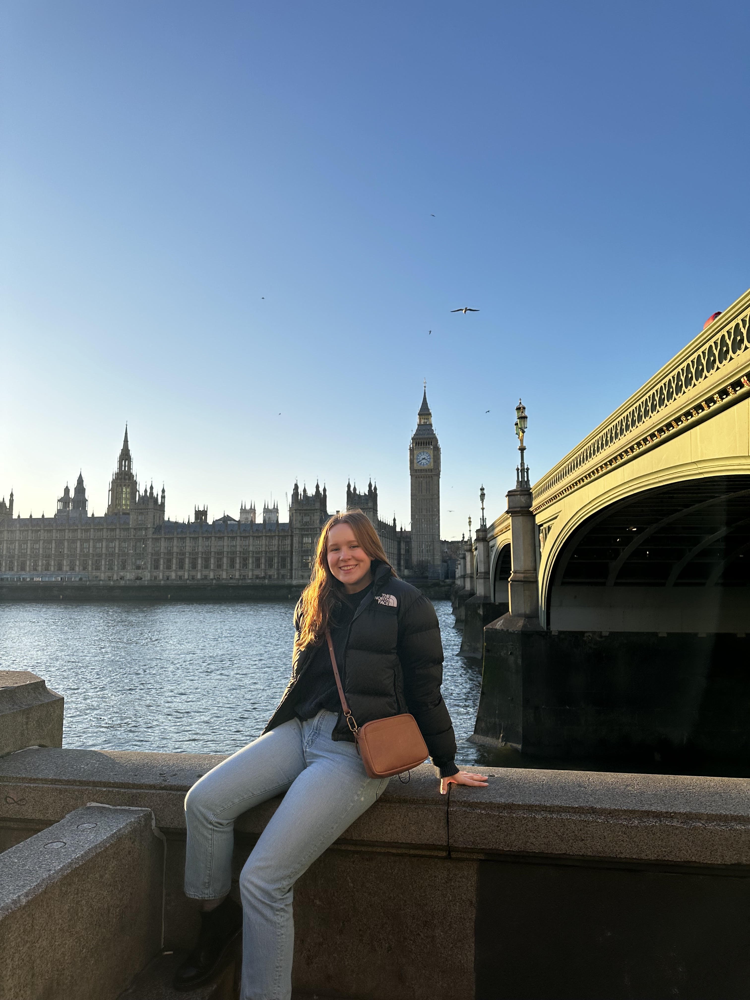

02 / Project detail
DNEG Virtual Production Internship

In 2024, I spent a semester in London interning with DNEG, where I had the opportunity to explore virtual production workflows and learn from artists and technical teams working across the studio.
The internship gave me hands-on experience with motion capture and real-time character workflows while also exposing me to technologies including LED stages, photogrammetry, volumetric capture, and virtual production cinematography.
Due to the confidential nature of the work and NDA restrictions, I’m limited in the images and behind-the-scenes material I can share from my time at DNEG. This page focuses on the experiences and work I’m able to discuss publicly.
Motion Capture & Unreal Engine
One of the major focuses of my internship was learning a professional motion capture pipeline using VICON and Shogun. I gained experience preparing performers and markers for capture, operating the motion capture system, recording takes, and working with the resulting animation data.
I then brought captured performances into Unreal Engine 5, where I worked with retargeting the motion onto MetaHuman characters. This gave me the opportunity to follow character animation from performance capture through its implementation in a real-time environment and better understand how the different parts of a virtual production pipeline work together.
Midas Cinematic
As our primary internship project, I worked with a team of five interns to create a short real-time cinematic in Unreal Engine 5 inspired by the story of King Midas.
Together, our team developed the project from concept through completion, working across character creation, environments, animation, materials, lighting, and cinematography before presenting the finished piece to artists and employees at DNEG.
My primary contribution focused on character development and clothing. I created Midas's costume in Marvelous Designer, prepared and skinned the clothing in Maya, and helped integrate the character into our Unreal Engine workflow.
Working on the cinematic gave me experience collaborating with a small multidisciplinary team while combining several parts of the CG pipeline into a finished real-time project.
Exploring Virtual Production
Beyond our primary project, the internship gave me the opportunity to learn about a much broader range of virtual production techniques and technologies.
Through demonstrations, shadowing, and conversations with artists and technical teams across DNEG, I was introduced to workflows involving LED stages, photogrammetry, volumetric capture, camera systems, and real-time production.
Being able to explore these different disciplines and talk directly with the people using them in production gave me a much broader understanding of how technology supports filmmaking and reinforced my interest in working at the intersection of art, technology, and production.